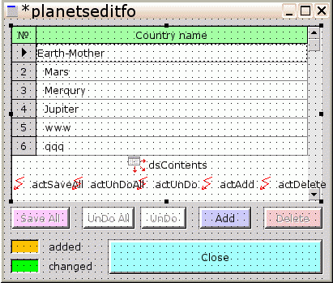
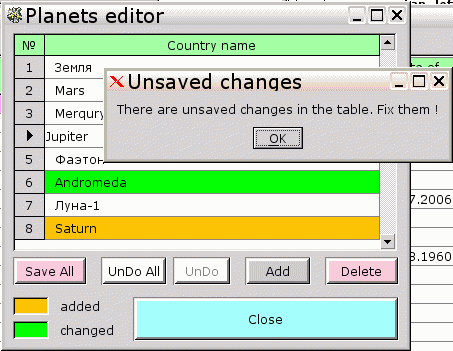

File->New->Form->Simple Form
что автоматически создает форму "planetseditfo".
Прикажем этoй форме отображаться в центе экрана ( не в дизайне, а во время работы программы ) :
Назначим ей заголовок, отличающий о прочих справочников :
Если форма чаще всего выводится только для просмотра, то удобно закрывать ее нажатием клавиши "Esc" ( как мы уже сделали с "editform" ) , установив, например :
planetseditfo->options->fo_closeonesc:= true
Но здесь это будет неуместно ( потому что редактирование справочников - серьезная и редко-выпоняемая работа ), поэтому оставим по-умолчанию :
fo_closeonesc:= false
Далее вставим каркас редактора справочников (форму "commonrefseditfo" ) :
Примечания :
Теперь будем адаптировать каркас редактора к конкретному редактору - редактору списка планет.
Щелкаем по середине гибрида "planetseditfo+commonrefseditfo", чтобы выбрать его, и роняем на него тот единственный компонент, которым будут различаться различные редакторы справочников :
DB -> tdbwidgetgrid
Примечание :
- в принципе , и "tdbwidgetgrid" можно было бы сделать общим для всех справочников - но тогда пришлось бы настраивать столбцы, заголовки и т.п. не визуально, а в коде, что есть полная бессмыслица
Теперь переключаем этот пустой "DataSource" на реальный источник данных ( здесь - данные о планетах ) :
procedure tplanetseditfo.planetseditformcreated(
const sender: TObject);
begin
application.createdatamodule(trefsdatamo, refsdatamo);
commonrefseditfo1.dsContents.dataset := grdPlanets.datasource.dataset;
end;что создает "DataModule", в котором определен интересующий нас запрос списка планет ( qryPlanets->dsPlanets ), причем сам этот запрос автоматически выполняется ( если установлено "Active:= true" во время дизайна самого "DataModule" ) , и в конце говорим нашему переключаемому "DataSource" - "теперь у тебя есть данные - список планет" ( ведь "grdPlanets.datasource.dataset" во время дизайна установлен как "refsdatamo.dsPlanets" )
Примечания :
- "commonrefseditfo1" - автоматически сгенерированное имя экземпляра вставленного субмодуля ( см. файл "planetseditform.pas", описание класса "tplaneteditfo") , то есть мезанизм субмодулей реализован не через наследование (исходного кода), а через агрегирование ( бинарного кода ) - что намного эффективнее с точки зрения памяти
- назначение "commonrefseditfo1.dsContents.dataset" тут же заполнит компоненты, увязанные с "dsContents", в нашем случае - табличный компонент "grdPlanets", плюс "dsContents" теперь может обрабатывать события , связанные с "refsdatamo.dsPlanets"
procedure tplanetseditfo.planetseditformdestroyed(
const sender: TObject);
begin
refsdatamo.free;
end;здесь - обычное освобождение памяти от отработавшего объекта.
И не забудем включить в "uses" секцию "implementation" файла "planetseditform.pas" модуль "refsdatamodule" :
implementation
uses
planetseditform_mfm,
// предоставляет тип "trefsdatamo" и объект "refsdatamo"
refsdatamodule
;
Так как данные представлены выборкой из одной таблицы БД ( "planets" ) , обновление данных может делаться чере автоматичскую генерацию SQL-запросов. Но чтобы это работало правильно, нужно подготовить к этому саму выборку данных ( определенную в "refsdatamo" ).
Переключаемся на отображение формы "refsdatamo" :
выбираем "qryPlanets"
Примечания :
Теперь опишем столбцы grdPlanets, подлежащие просмотру и редактированию. Для начала заглянем на предыдущий шаг:
Уронить с палитры "DB" на "grdPlanets" компонент
tdbstringedit :
Примечания :
Теперь мы видим нужные данные - то есть компонент "tdbwidgetgrid" построил для нас таблицу из субкомпонетов "tdbstringedit" ( могут быть и другие -" tdbbooleanedit", "tdbenumeditlb" и т.д. ). В случае "tdbenumeditlb" можно, оставаясь в рамках запроса к одной таблице - редактировать ссылки на другие таблицы.
Автоматически установленное свойство "DataSource:= refsdatamo.dsPlanets" объекта "seName" унаследовано от родительского объекта "grdPlanets". Менять его нет смысла - все равно будет проигнорировано .
Также, "grdPlanets->datacols.count" увеличился на "1" (то есть произошло автоматическое добавление столбца, в нашем случае "Item 0" ) .
grdPlanets :
Включим автонумерацию строк таблицы :
grdPlanets :
и нарисуем заголовок таблицы :
grdPlanets
Если в таблице ожидается не более 1000 записей ( 99% для списка планет ) , то можно разрешить точную синхронизацию вертикальной прокрутки с содержимым БД :
grdPlanets :
Примечания :
Теперь реализуем цветовое выделение строк ( чтобы пользователь сразу видел - где исходные данные, а где те, что он сам навводил ), под которое и сделаны цветные полоски слева о кнопки "Close" ( cм. выше ) . Назначаем то же набор цветов, что и на полосках :
grdPlanets :
и прописываем код выбора нужного цвета из этого набора, через специальный обработчик события :
grdPlanets :
и код этой процедуры :
procedure tplanetseditfo.grdplanetsupdaterowdata(
const sender: tcustomgrid;
const arow: Integer; const adataset: TDataSet);
begin
// анализ типа обновления записи
case adataset.updatestatus of
usInserted: // это - новая запись
// подкрасить цветом, 1-м по порядку в "rowcolors"
sender.rowcolorstate[arow]:= 0;
usModified: // это - запись, измененная с момента вызова формы
// подкрасить цветом, 2-м по порядку в "rowcolors"
sender.rowcolorstate[arow]:= 1;
// это - нетронутая (или удаленная ? )запись
// ( но удаленые мы все равно не сможем увидеть )
else // нетронутая запись
sender.rowcolorstate[arow]:= 255; // убрать подкраску
end;
end;
и не забудьте добавить нужные "unit" -ы в секцию "interface -> uses" :
interface
uses
msegui,mseclasses,mseforms,commonrefseditform,msedbedit,
msegrids, // обеспечивает "tcustomgrid"
db // обеспечивает "tdataset"
;
Так как такого рода редактирование требуется нечасто, то этот вызов можно спрятать подальше, чтобы не мешался - куда-нибудь в основное меню. Но, на случай, если вдруг понадобится несколько способов вызова, или из нескольких форм - опять задействуем компонент "taction".
Переключаемся на дизайн "mainfo" ( файл "main.pas" ). Роняем в любом незарисованном месте "mainfo" с палитры "GUI" :
taction :
procedure tmainfo.planetseditexecute(const sender: TObject);
begin
try
// отобразить форму редактора планет
application.createform(tplanetseditfo, planetseditfo);
// если эта форма закрыта ожидаемым образом
// ( кнопкой с кодом "mr_windowclosed" )
if planetseditfo.show(true) = mr_windowclosed then begin
// при необходимости - освежаем данные о персоналиях
// с учетом изменений в планетах
qryPersons.active:= true;
end;
finally
planetseditfo.free; // удаляем форму редактора из памяти
end;
end;
Теперь настроим вызов "actPlanetsEdit" из основного меню. Выделим для вызова редакторов справочников новый раздел меню - "Edit" .
mainfo :
Не забудьте добавить ссылку на файл "planetseditform" в секцию "interface" файла "main.pas" :
interface
uses
msegui,mseclasses,mseforms,msepqconnection,msesqldb,msedb,
msedbedit,mseactions,msesimplewidgets,msemenus,db,msegrids,
planetseditform
;
Примечания :
Финальный вид формы редактора списка планет :
в дизайне :

и во время работы программы:

Следующие справочники (континенты, страны, ... ), вследствие применения субмодуля "commonrefeditform" , будут практически аналогичны - потому будут описаны кратко, но с детализацией отличий .